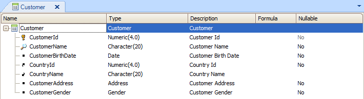
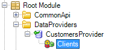
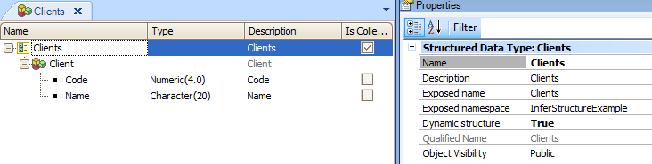

You often need to show information from your database in data collections. The Data Provider object is a GeneXus object aimed at providing data collections (for example, a list of customers) or a data structure (for example, customer data) in an easy, high-level, and declarative manner. The output is a hierarchical structure: how does GeneXus represent that? As an SDT (Structured Data Type) or BC (Business Component) (or a collection of them). This output may be defined externally by an SDT (see Example: 'CustomersProvider' Data Provider. See more information on how to create a Data Provider using an SDT), or implicitly through its own source/structure. This article is meant to show an example of how to use the Infer Structure property so as to let GeneXus infer the structure of the SDT associated with your Data Provider, and to provide an example of how GeneXus can help us in defining the SDT structure when you have defined a Data Provider but not its associated SDT. Suppose that you have defined the 'Customer' transaction as shown below:  And you need to load all Customers into a collection and send it to another object, such as a Web Panel for instance, or to any other object. Step 1: Define the Data Provider structureYou define the following 'CustomersProvider' Data Provider structure:
Clients
{
Client
{
Code = CustomerId
Name = CustomerName
}
}
Now you need to define its output SDT. Step 2: Set the Infer Structure property as 'Yes, if SDT is dynamic'Now you have to set the Infer Structure property as "Yes, if SDT is dynamic" for 'CustomersProvider'. Step 3: SaveSave the 'CustomersProvider' Data Provider. When you save the Data Provider, GeneXus will automatically generate an SDT with the structure necessary, associating it to the Data Provider Output property. Step 4: Done!The following output will result after you set the Infer Structure property as "Yes, if SDT is dynamic" and save: ========== Specification started ========== Specifying CustomersProvider (1 of 1) ... Specification Success Reloading Data Provider 'CustomersProvider'...Done The newly-created SDT will be available from the Folder View associated with the 'CustomersProvider':  With its structure inferred from the 'CustomersProvider' Data Provider:  Note that the SDT generated will have its Dynamic structure property set to true. This means that every time that the Data Provider is saved, the structure of the SDT set in the Data Provider's Output property will be updated (inferred by the specifier using the Data Provider structure). When the SDT is updated by the user, this property is automatically set to 'False', thus disabling the inference mechanism, and consequently, the SDT will not be updated when the Data Provider structure is changed. AvailabilityThe inference mechanism for SDTs is available as of GeneXus Tilo Beta 3. See alsoExample: 'CustomersProvider' Data Provider
|
| Backlinks | |
| Defining a Data Provider | Infer Structure property |